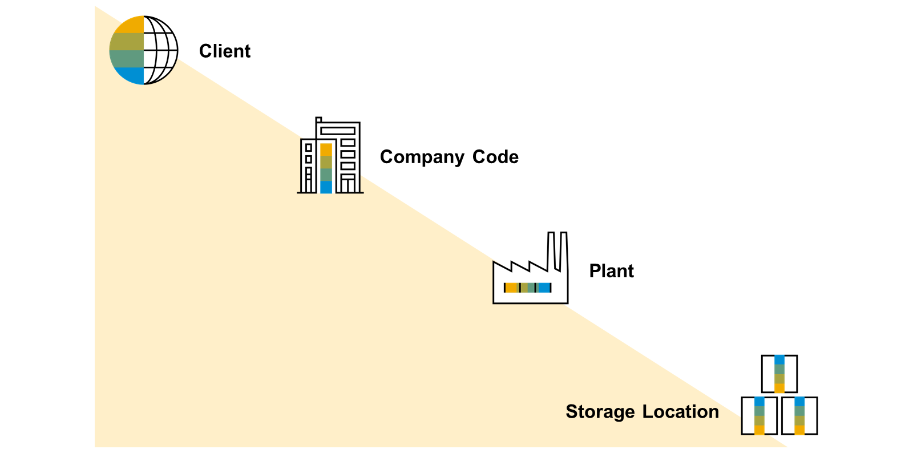
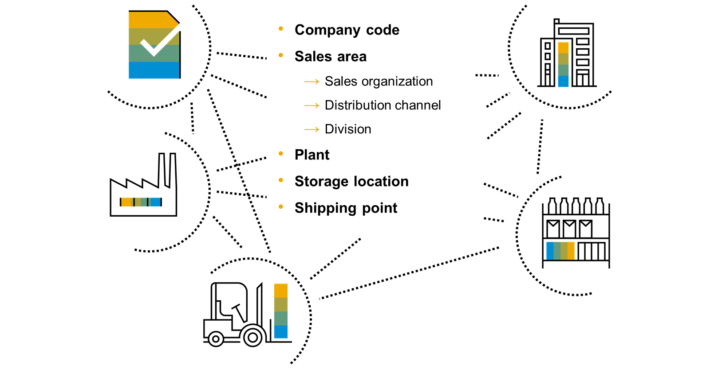

Estructura Enterprise
1. ¿Qué es la Arquitectura Empresarial?
La Arquitectura Empresarial (también llamada Estructura Enterprise) es un marco que organiza y documenta cómo funcionan los elementos esenciales de una organización: procesos de negocio, tecnología, datos y personas. Su función principal es ofrecer una vista completa y coherente de la empresa para que las decisiones sean consistentes con los objetivos estratégicos.
En términos sencillos: es el “mapa” que indica cómo se conectan las partes de la empresa para entregar valor (productos/servicios) al cliente. No es solo tecnología; incluye procesos, roles, políticas y datos.
Componentes principales: arquitectura de negocio, de datos, de aplicaciones y tecnológica — cada una define un dominio y juntos forman el ecosistema de la empresa.
2. ¿Para qué sirve?
La Arquitectura Empresarial sirve para varios fines prácticos y estratégicos:
- Alinear TI y negocio: asegura que las inversiones tecnológicas apoyen las metas de la empresa.
- Optimizar procesos: identifica duplicidades y cuellos de botella, proponiendo procesos más eficientes.
- Planificar cambios: facilita migraciones, integraciones y adopción de nuevas tecnologías minimizando riesgos.
- Toma de decisiones basada en datos: centraliza información clave para decisiones estratégicas (ej.: lanzar un producto, entrar a un mercado).
- Gestionar riesgos: al mapear dependencias se pueden priorizar controles y seguridad en áreas críticas.
En resumen: reduce incertidumbre y mejora la capacidad de la empresa para responder al cambio.
3. Ventajas y Desventajas
Ventajas principales:
- Visión integral: todas las áreas se ven dentro de un mismo plano.
- Mejor coordinación: reduce choques entre equipos y proyectos.
- Eficiencia y ahorro: elimina redundancia de sistemas y procesos.
- Flexibilidad: facilita escalar o introducir nuevas soluciones tecnológicas.
Desventajas / retos:
- Inversión inicial: tiempo, recursos y contratación de especialistas pueden ser necesarios.
- Complejidad: requiere modelado y documentación rigurosa.
- Mantenimiento: la arquitectura debe revisarse periódicamente para seguir siendo útil.
- Resistencia al cambio: la adopción puede verse frenada por cultura organizacional.
4. ¿Cómo se aplica?
El despliegue típico sigue fases ordenadas (pueden variar por metodologías):
- Diagnóstico: inventario de procesos, sistemas y datos actuales. Identificar problemas y oportunidades.
- Diseño: definir arquitectura objetivo (bloques funcionales, flujos de datos, responsabilidades).
- Plan de transición: priorizar proyectos, definir quick wins y roadmap con fases y hitos.
- Implementación: ejecutar integraciones, cambios de procesos y capacitaciones por fases.
- Gobernanza y mejora continua: medir impacto, ajustar y mantener la arquitectura actualizada.
Herramientas útiles: modelado (Archi, Sparx, Visual Paradigm), marcos (TOGAF, Zachman) y metodologías ágiles para ejecutar proyectos de cambio.
5. Ejemplos
Algunos casos prácticos donde se aplica la Arquitectura Empresarial:
- Banca: unificar CRM, core bancario y sistemas de fraude para atención y seguridad.
- Salud: integrar historias clínicas, laboratorio y farmacia para evitar errores y mejorar atención.
- Tecnología: definir plataformas comunes (APIs, microservicios) para equipos de producto.
- Manufactura: coordinar MES, ERP e inventarios para optimizar producción y logística.
- Gobierno: interoperabilidad entre agencias para servicios ciudadanos más rápidos.
Estructura empresarial en la ejecución manufacturera
En manufactura la arquitectura empresarial conecta: planificación (ERP), control de producción (MES), calidad y logística. Esto permite:
- Sincronizar planes de producción con disponibilidad de materiales.
- Monitorear indicadores de rendimiento (OEE) para tomar acciones rápidas.
- Control de calidad integrado para reducir devoluciones y desperdicios.
- Automatizar órdenes entre sistemas para reducir intervención manual.
Ejemplo práctico: cuando la planificación detecta baja de stock, el sistema genera automáticamente órdenes de compra y ajusta la programación de máquinas para mantener la producción.
Estructura empresarial en ventas y distribución
En ventas y distribución la arquitectura integra: gestión de inventarios, canales de venta (tienda online, retail), CRM y logística (transportistas, almacenes). Beneficios:
- Mejor visibilidad de inventario en tiempo real.
- Rutas de distribución optimizadas para reducir tiempos y costos.
- Experiencia de cliente consistente en todos los canales.
- Capacidad de personalizar ofertas según datos del cliente.
Ejemplo práctico: una orden online comprueba stock en el almacén más cercano, genera la orden de picking y asigna la mejor ruta de entrega automatizada.
Tipos de Estructura Enterprise
Existen diferentes enfoques y marcos de referencia para implementar la Arquitectura Empresarial, cada uno con su propio método y alcance. Los más conocidos son:
- TOGAF (The Open Group Architecture Framework): uno de los más utilizados a nivel mundial. Define un proceso llamado ADM para desarrollar, implementar y mantener la arquitectura empresarial.
- Zachman Framework: modelo basado en una matriz que clasifica la arquitectura desde diferentes perspectivas (dueño, diseñador, constructor) y dimensiones (datos, funciones, red, personas, tiempo, motivación).
- FEAF (Federal Enterprise Architecture Framework): desarrollado para el gobierno de EE. UU., enfocado en estandarización y coordinación entre agencias públicas.
- DoDAF (Department of Defense Architecture Framework): creado para el Departamento de Defensa de EE. UU., muy orientado a sistemas complejos y de defensa.
- Gartner Enterprise Architecture Framework: enfoque flexible que prioriza la alineación entre estrategia de negocio y capacidades tecnológicas, menos rígido que TOGAF.
- ArchiMate: lenguaje de modelado estándar para describir, analizar y visualizar arquitecturas empresariales de manera coherente.